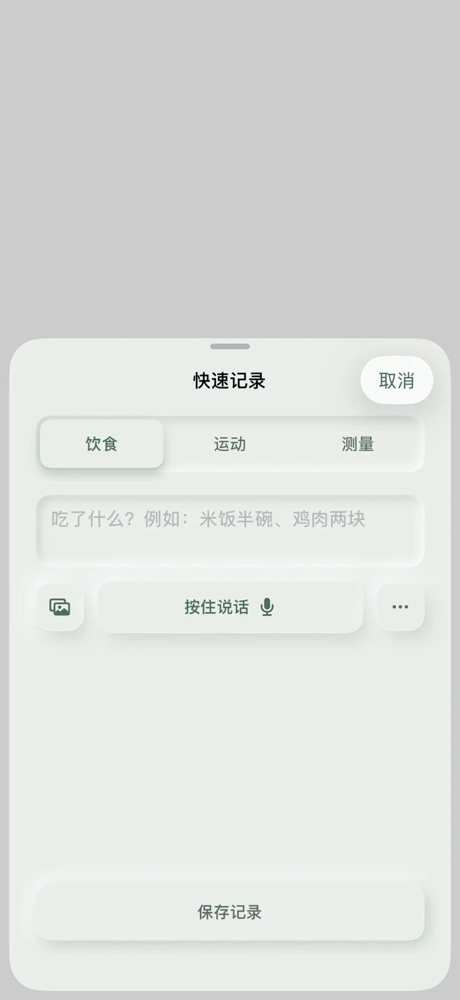
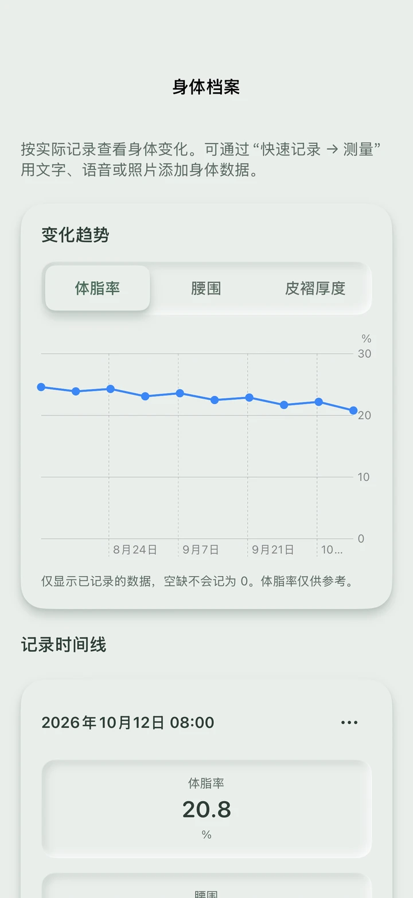
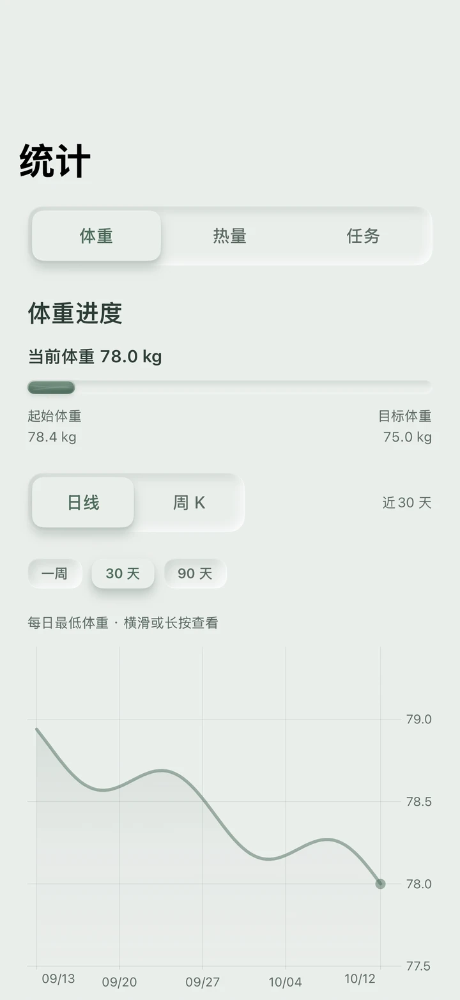
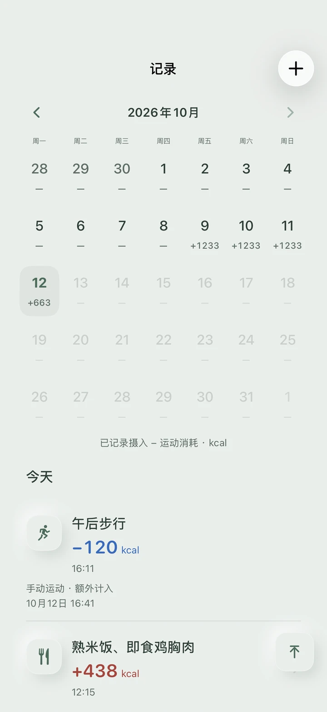

怎么方便，怎么记。
输入文字、添加照片，或按住说话。
饮食、运动、测量，都有自己的记录入口。



从一条记录开始
今天吃了什么、做了什么运动、身体有哪些变化。
HeatBank 帮你留住这些细节，再把它们放回时间里。
输入文字、添加照片，或按住说话。
饮食、运动、测量，都有自己的记录入口。

从日历定位日期，沿时间线回看饮食和运动记录。

从每天的变化，到一段时间的趋势，
为下一步安排多一点依据。
日线看近期变化，周 K 回看更长一段时间。按自己的记录观察波动。
按周、按月汇总完整记录日的估算热量缺口，和同期目标一起查看。
分步填写身体资料与日常活动，设定目标与速度，再核对计划。
六个画面，认识 HeatBank。点击可查看大图。
界面中的记录为示例数据。页面展示当前开发版本，实际 TestFlight 功能以收到的构建为准。
HeatBank 目前通过 TestFlight 提供 iPhone 测试。点击下方“填写问卷，申请内测”，填写测试登记问卷并留下邮箱。后续测试邀请将发送至你填写的邮箱，安装方式以收到的说明为准。
可以为记录补充照片，也可以按住说话输入描述。饮食和运动分析提供的是参考估算，建议把具体食物、份量或运动情况说明清楚，并核对结果。
热量统计只纳入已经结束、已确认完整且数据有效的日期。当天、未确认完整以及待分析的日期不会计入；缺失值也不会直接当作零。